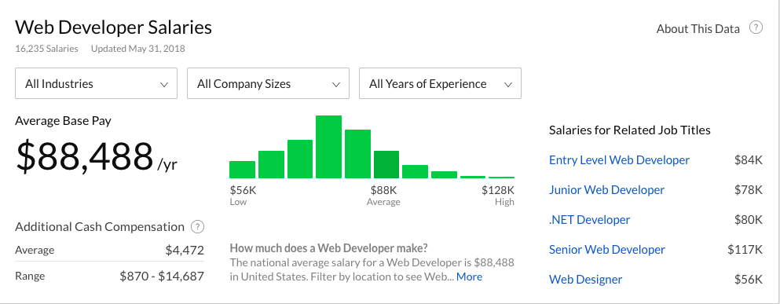

Como ser um Desenvolvedor Web:
Por onde começar?
Se você está buscando como ser um desenvolvedor web e investir nessa carreira, fez uma ótima escolha, nós vamos te dar os primeiros passos.
Essa é uma das áreas mais bem pagas para quem está apenas começando sua carreira. Então, se o seu interesse é de construir um site ou começar sua jornada como um desenvolvedor de sucesso, precisa começar de algum lugar.
A área de desenvolvimento é muito ampla, então antes de começar a pesquisar como ser um desenvolvedor, é uma boa ideia ter uma meta em mente. Suas metas podem variar desde mudar o rumo da sua carreira até abrir uma loja virtual. Ou até mesmo desenvolver para amigos ou somente por diversão. Seja qual for sua meta, tenha certeza de que você entende o que está fazendo e porque está fazendo.
Desenvolvimento Web consiste em diversos ramos menores de atuação, e por isso ter uma meta clara vai te ajudar a decidir o que você deve aprender primeiro e o que você pode pular. Um ótimo ponto de partida seriam plataformas de aprendizado online, como o BitDegree, que oferece uma grande variedade de cursos criados especificamente para quem busca como ser um desenvolvedor web. Mas o mais recomendado é começar ainda antes, escolher entre desenvolvimento back-end ou front-end.
Como se tornar um desenvolvedor Front-end
Front-end
Consiste em tudo que o usuário vê. O design do site, menus, botões de interação e imagens que criam a experiência do usuário. É como a frente de sua loja, e o que seu usuário vê ao entrar nela.
 |
|
O arsenal de um desenvolvedor front-end consiste em HTML, CSS e JavaScript. Em comparação, desenvolvedores back-end escrevem códigos que não são vistos pelos usuários. Geralmente envolve trabalhar na melhoria das funcionalidades de um sistema, APIs, bibliotecas ou similares. Em termos simples, desenvolvimento back-end significa trabalhar com códigos que não são vistos diretamente. |
HTML & CSS
HTML é usado para representar conteúdos diversos como parágrafos de texto, títulos, tabelas. Considerada como uma das linguagens mais simples de ser aprendida, é um excelente ponto de partida para todo desenvolvedor. Independente da sua área de atuação, HTML faz parte da lista de coisas que todo profissional precisa saber.
O CSS é utilizado para customizar o material criado com o HTML. O melhor lugar para aprender HTML e CSS é o BitDegree, onde você encontra um curso interativo de HTML e CSS. Toda a programação é feita no próprio navegador, então não é necessário baixar nenhum programa adicional. Ao final do curso, que dura de um a dois dias, você terá criado um site básico em HTML.
JavaScript
Após que você ter uma boa noção de CSS e HTML, é hora de aprender o JavaScript. Ele é utilizado para deixar o site mais “vivo”. JS é importante de ser aprendido porque as empresas estão focando em criar sites dinâmicos e interativos.
JavaScript permite que o site possua funcionalidades interativas. Botões de curtir do Facebook, retweets do Twitter, e vários formulários funcionam com JavaScript. Ele fornece ao usuário uma representação visual de suas ações, e ajudam os desenvolvedores a catalogar o que os usuários estão clicando. O vídeo-tutorial de JavaScript: Aprenda JavaScript em Apenas 1 Hora cobre o básico de JS em meros 60 minutos. Claro que em uma hora você não irá dominar completamente a linguagem, mas é um ótimo começo!
Como se tornar um desenvolvedor Back-end
Backend é geralmente associado com bancos de dados. O back-end do site é como a sala de estoque de uma loja, que não é visível aos usuários. Mas é uma parte essencial da loja. Desenvolvedores de back-end são normalmente resolvedores de problemas, que incorporam pensamento lógico em suas tarefas diárias, e são mais interessados na funcionalidade de um site do que na aparência. Desenvolvedores back-end usam linguagens de servidor, como o PHP e SQL. Sendo que um conhecimento básico de HTML e CSS é necessário para apresentar qualquer dado de forma visual.
SQL
Se o seu site coleta qualquer tipo de informação do usuário, como endereço de email, nome, sobrenome, etc, você precisa armazenar essas informações em um banco de dados. SQL é usado dentro do banco de dados para filtrar, adicionar, remover, ou mesclar informações. Retornando ao exemplo da loja, imagine que a sala de estoque seja o banco de dados. Ela é gigante, mas felizmente você tem um funcionário que conhece todos os itens que estão ali. Porém, ele fala apenas a linguagem SQL. Então, para fazer perguntas ou dar instruções você também terá que usar linguagem SQL. Onde aprender SQL? Online, é claro. Você pode começar sua jornada SQL com o Curso interativo: Aprenda Comandos SQL e Pratique Online. Toda a programação é feita pelo navegador, em um ritmo muito bom de se aprender. Esse curso é suficiente para deixar você pronto para o primeiro projeto.
PHP
Para tornar seu site mais funcional, você utiliza o PHP. Essa linguagem de programação é excelente no que se trata de comunicação entre o site e bancos de dados. Se você já usou algum formulário de login, é provável que tenha sido criado em PHP. Quando você digita os dados de login no navegador, o PHP faz a verificação com o banco de dados se as informações estão corretas. Caso sim, seu login é realizado com sucesso. Para aprender PHP, é recomendado o curso online: Explicando o Básico do PHP em um Tutorial Interativo. Os melhores cursos possuem ambientes de aprendizado interativos. Assim, você já poderá começar a programar no início, sem a necessidade de criar um ambiente de desenvolvimento no seu computador. Programar, testar, e ver uma representação visual de seu código é um grande incentivador. Tendo dito isso, você está no caminho certo para se tornar um desenvolvedor web, parabéns! Escolha entre front-end e back-end e comece a aprender as linguagens associadas.